<title>Roguelike Run</title>
<meta name="claude:viewport-fit-sides" content="cover">
<style>
/* One column of captioned screenshots, the run in the order a player meets it. */
:root { --bg:#eef1f4; --fg:#16202b; --muted:#566373; --line:#cfd6de; --accent:#2f7fc4;
  --display:"Space Grotesk",system-ui,sans-serif; --body:"Inter",system-ui,sans-serif; }
@media (prefers-color-scheme: dark) { :root:not([data-theme="light"]) { --bg:#0f141a; --fg:#e4eaf0; --muted:#93a1b0; --line:#26303b; --accent:#6db3ee; color-scheme:dark } }
:root[data-theme="dark"] { --bg:#0f141a; --fg:#e4eaf0; --muted:#93a1b0; --line:#26303b; --accent:#6db3ee; color-scheme:dark }
body { background:var(--bg); color:var(--fg); font-family:var(--body); line-height:1.5;
  padding-left:max(16px, env(safe-area-inset-left, 0px)); padding-right:max(16px, env(safe-area-inset-right, 0px)); padding-block:32px 48px }
main { max-width:1100px; margin:0 auto; display:grid; gap:36px }
h1 { font-family:var(--display); font-size:2rem; margin:0; text-wrap:balance }
h2 { font-family:var(--display); font-size:1.2rem; margin:0 0 6px }
p { margin:0; max-width:68ch; color:var(--muted) }
figure { margin:0; display:grid; gap:10px }
img { width:100%; border-radius:8px; border:1px solid var(--line) }
code { font-size:.9em; color:var(--accent) }
</style>
<link rel="stylesheet" href="https://fonts.googleapis.com/css2?family=Inter:wght@400;600&family=Space+Grotesk:wght@600&display=swap">
<main>
  <header style="display:grid;gap:8px">
    <h1>Roguelike run</h1>
    <p>Eight planets on the way to the slime's home world. One map and one slime each, a shop between them. Shots from <code>larder-world run=1 menu=shop-mid</code> and friends on software Vulkan, 1600 x 900. Nothing is balanced yet.</p>
  </header>
  <h2 style="margin-top:12px">The run's slime is shape C (11-15 08:45Z)</h2>
  <figure>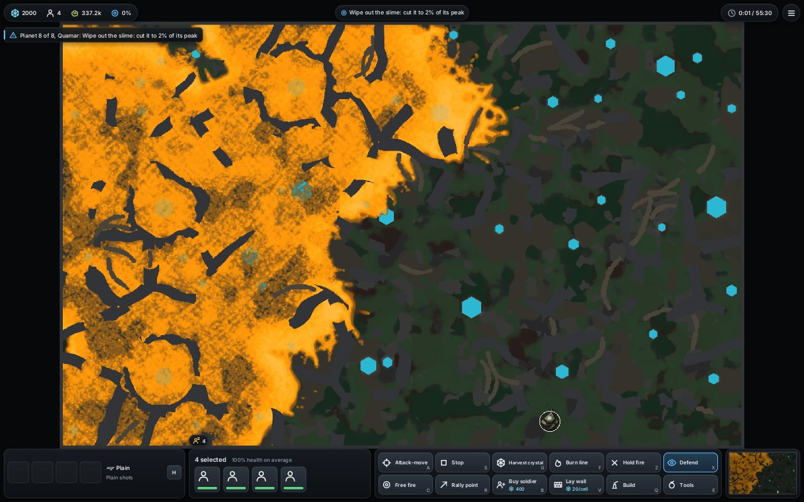<figcaption><h2>Core world, shape C, at landing</h2><p>Until now a run played the old bare slime by mistake (the pictures below show it shedding nine tenths of itself). Now C under the tier: 337,210 walkers at landing (no head start), from C's 25,000 times the planet's factor.</p></figcaption></figure>
  <figure>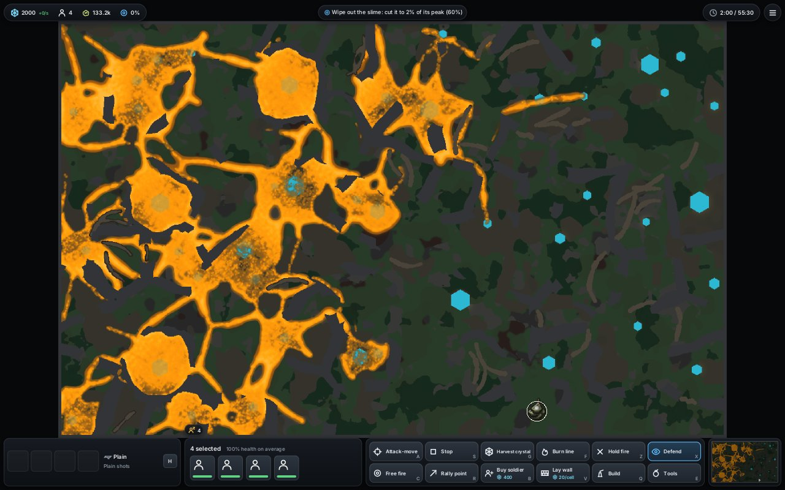<figcaption><h2>The same at 2:00</h2><p>133,237 walkers: the start discs far from crystals withered and the body networks its crystals over half the map. The run's 87 s head start does most of this before landing.</p></figcaption></figure>
  <figure>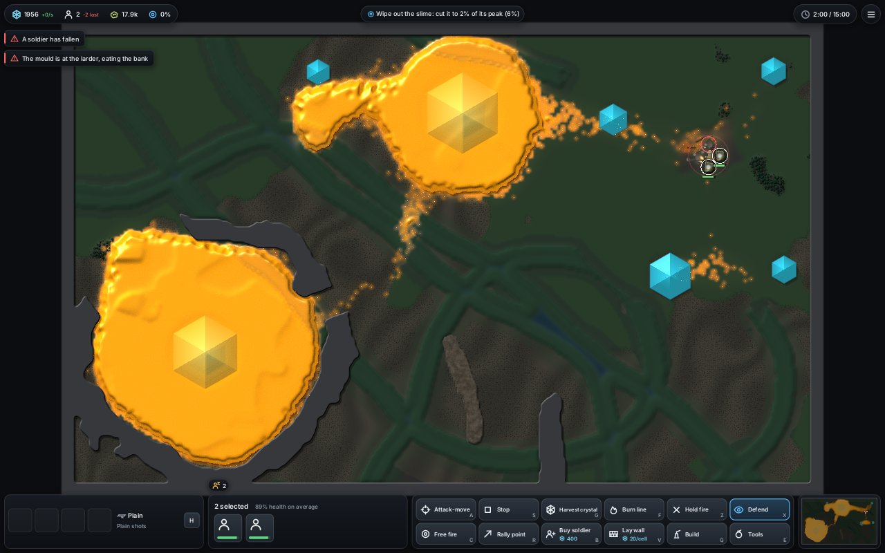<figcaption><h2>Planet 1, shape C, 2:00, idle hand</h2><p>15,442 at landing, 17,862 at 2:00, 30,883 at 10:00: C grows and holds, so an idle squad cannot win.</p></figcaption></figure>
  <h2 style="margin-top:12px">Winning when the slime is gone (11-15)</h2>
  <figure>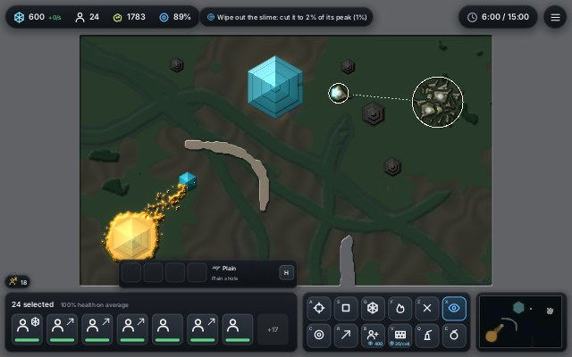<figcaption><h2>Planet 1, strike hand, 6:00</h2><p>The goal is now 2% of the slime's peak on every planet (it was 25% on planet 1). 1,783 walkers, the bar at 1%.</p></figcaption></figure>
  <figure>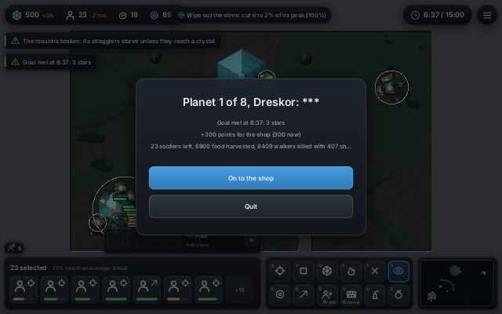<figcaption><h2>Won at 6:37 with 19 walkers left</h2><p>Under 3% of its peak the slime is broken and its stragglers off food starve ("The mould is broken" on the left); 8,409 walkers killed with 407 shots. Under the old goal this planet ended with about 450 left. The claim and fort hands did not reach either goal by 15:00.</p></figcaption></figure>
  <h2 style="margin-top:12px">Run pacing: the clock and the head start (11-15)</h2>
  <figure>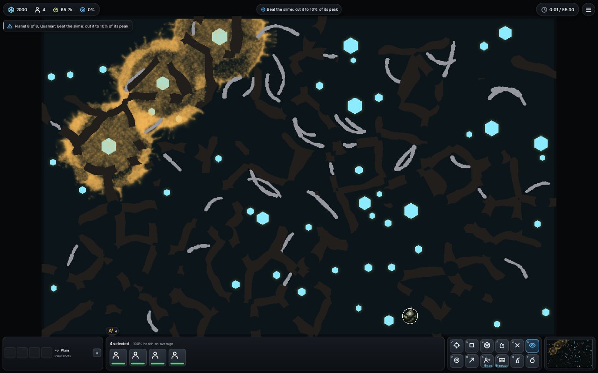<figcaption><h2>Core world, fresh, at landing</h2><p>Planet 8, seed 1, <code>grow=0</code>, idle hand. 65,654 walkers in three discs round the nests. The clock now reads 55:30 (it was 15:00 on every planet).</p></figcaption></figure>
  <figure><figcaption><h2>The same, at 1:00</h2><p>(The old bare slime a run played by mistake until 11-15 08:45Z; the run now plays shape C, above.) 7,335 walkers: the slime shed nine tenths of itself in a minute and drew back into a network between its nests. It does this on every planet (planet 1: 3,234 to 1,652 by 0:30), so the walkers the run scales by area do not spread the slime over a big map.</p></figcaption></figure>
  <figure>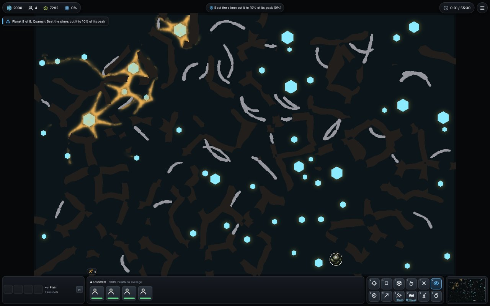<figcaption><h2>With the 87 s head start, at landing</h2><p>7,292 walkers: the squad lands on the settled network, its trails laid, at 0:01 of 55:30. Planets 4-8 grow 11, 25, 40, 60 and 87 s first; 1-3 none.</p></figcaption></figure>
  <figure>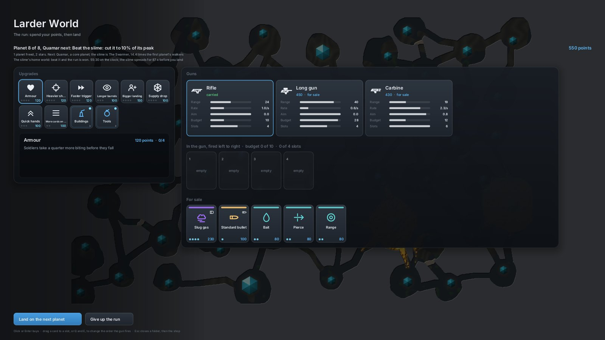<figcaption><h2>The shop says the clock</h2><p>Before the core world: "55:30 on the clock; the slime spreads for 87 s before you land".</p></figcaption></figure>
  <h2 style="margin-top:12px">Rolled bullets</h2>
  <figure>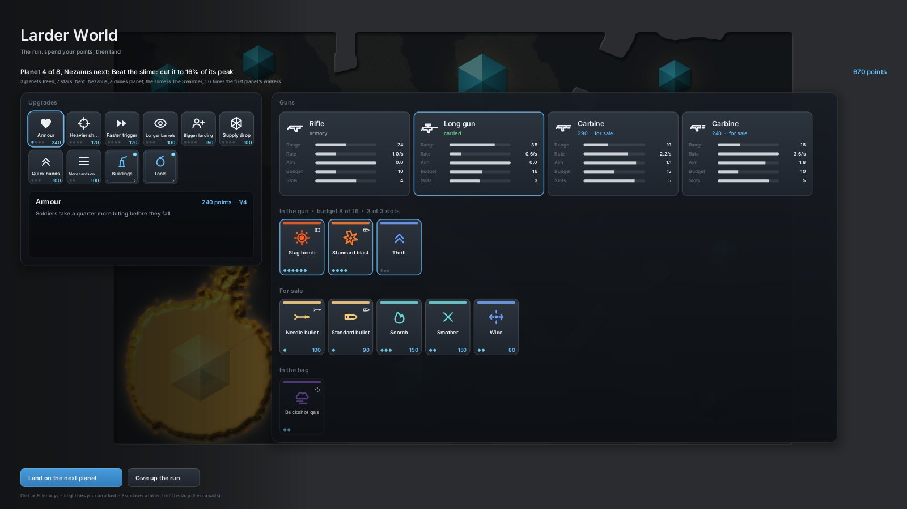<figcaption><h2>Rolled bullets, three planets in</h2><p>Each shop now rolls two bullets (the gun thread's shells and sets: needle, slug, buckshot, standard) beside three modifier and flight cards. In the gun: a slug bomb (6 budget), a standard blast (4) and thrift, 8 of the long gun's 16. For sale: a needle bullet at 100, a standard bullet at 90, scorch, smother and wide. A buckshot gas waits in the bag. The set's glyph sits in each bullet's corner; the bomb shell comes from planet 4.</p></figcaption></figure>
  <figure>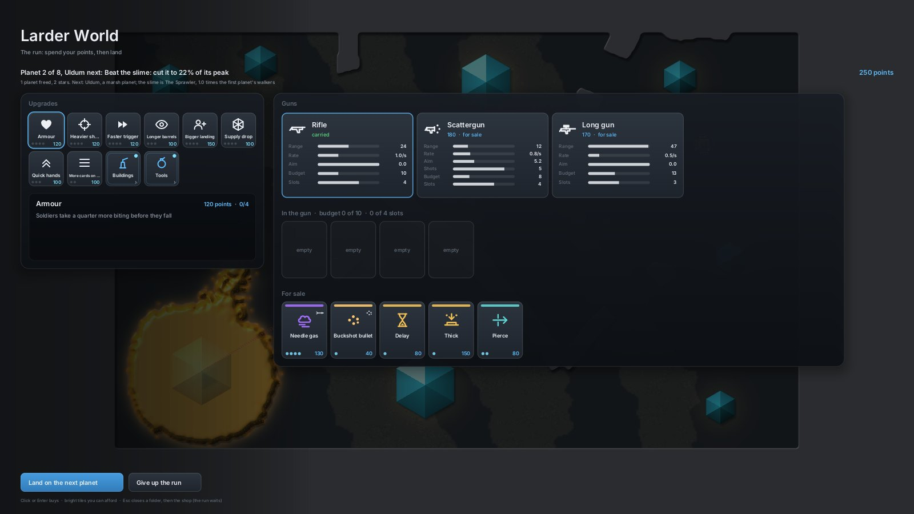<figcaption><h2>After planet 1, with bullets</h2><p>Two rolled bullets and three cards on offer to a rifle with empty slots, 250 points.</p></figcaption></figure>
  <h2 style="margin-top:12px">The rebuilt shop, before bullets</h2>
  <figure>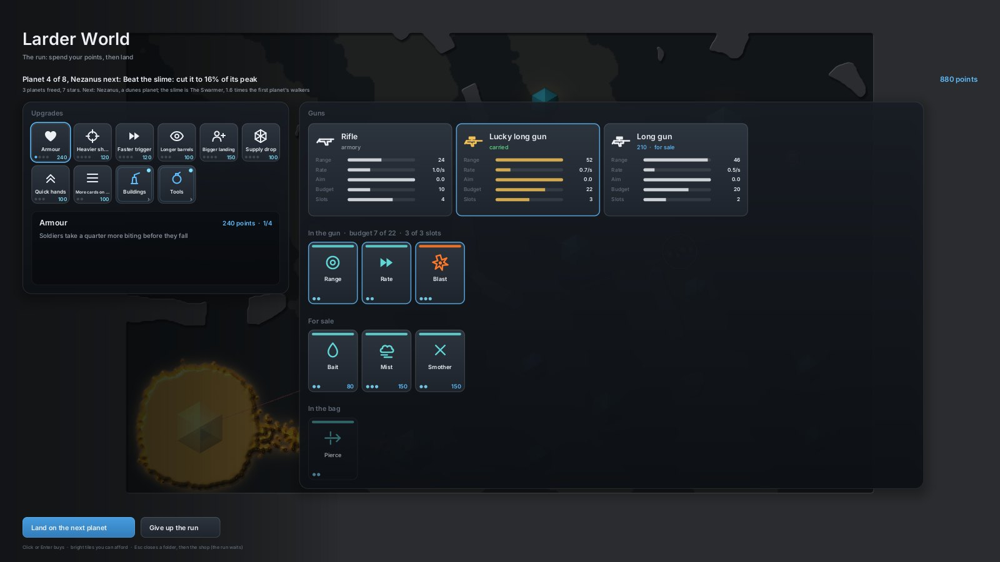<figcaption><h2>The shop, rebuilt: three planets in</h2><p>Two areas, as the owner asked at 16:55Z. Left, upgrades as command-card tiles (the in-game icons, levels as pips, the price in the corner), with Buildings and Tools as folders and a box saying what the tile under the cursor does. Right, the armory: gun cards with the kind's icon and bars for range, rate, aim, budget and slots (a lucky long gun bought and carried, gold; the owner has since ruled that nothing is labelled lucky), the carried gun's slots with its three cards (budget 7 of 22, 3 of 3 slots), three cards for sale and one in the bag that does not fit. 880 points left.</p></figcaption></figure>
  <figure>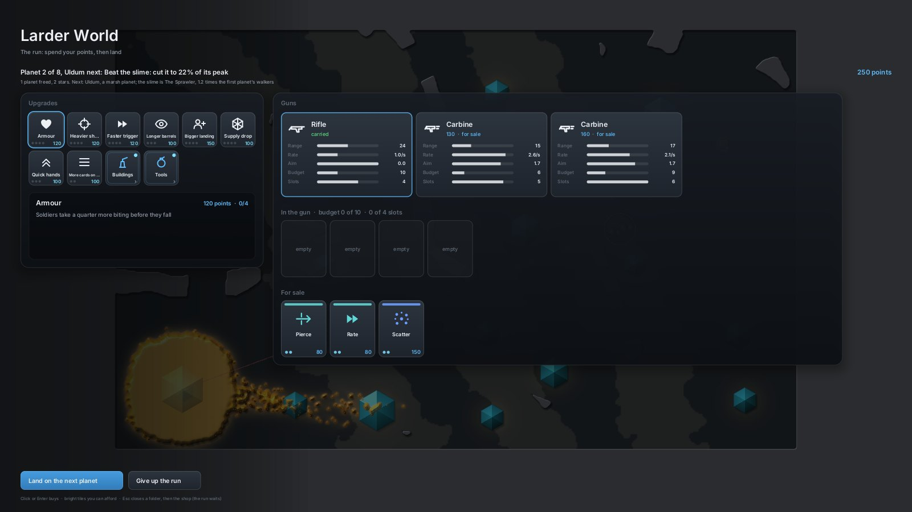<figcaption><h2>After planet 1 (two stars, 250 points)</h2><p>The rifle the run starts with (budget 10, 4 slots, all empty), two carbines rolled for planet 2 at 130 and 160, three common cards. Bright tiles are what 250 points buy.</p></figcaption></figure>
  <figure>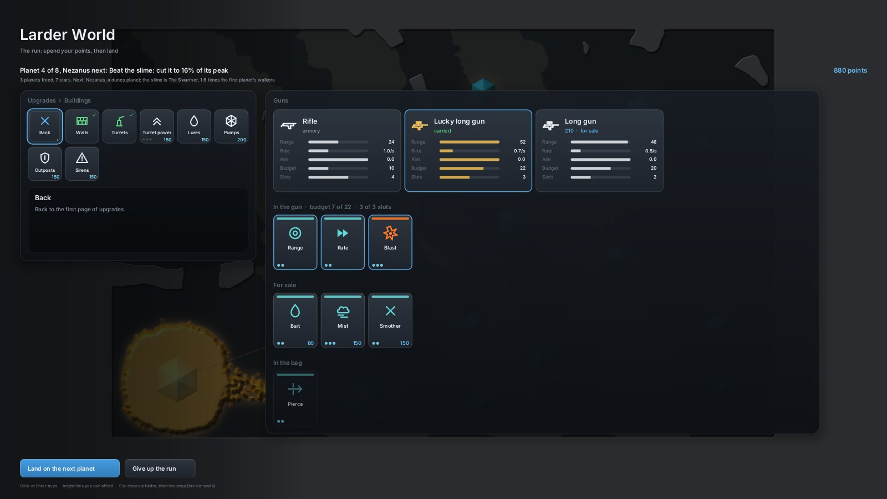<figcaption><h2>Buildings, opened</h2><p>Walls and turrets owned (ticks), turret power at 1 of 3, the rest priced. Back, or Esc, closes the folder.</p></figcaption></figure>
  <figure>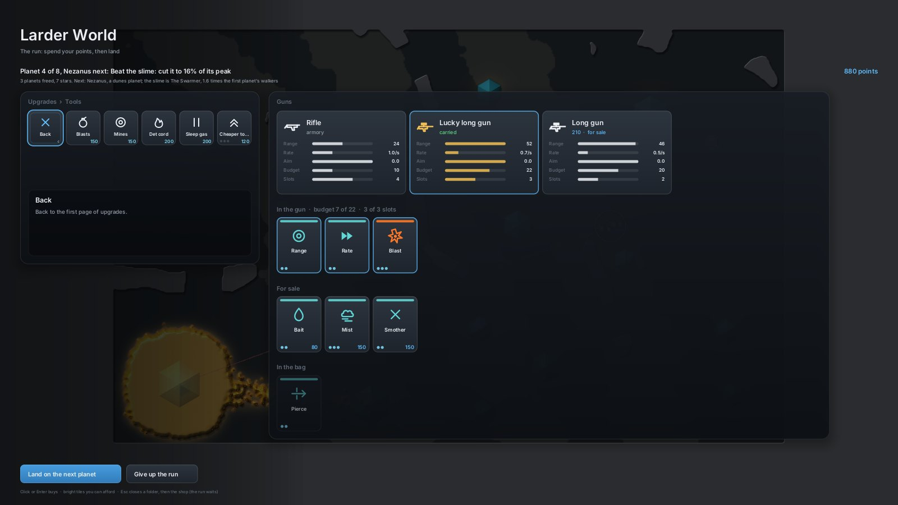<figcaption><h2>Tools, opened</h2><p>Blast, mine, det cord, sleep gas and cheaper tools, with the tools page's icons.</p></figcaption></figure>
  <figure>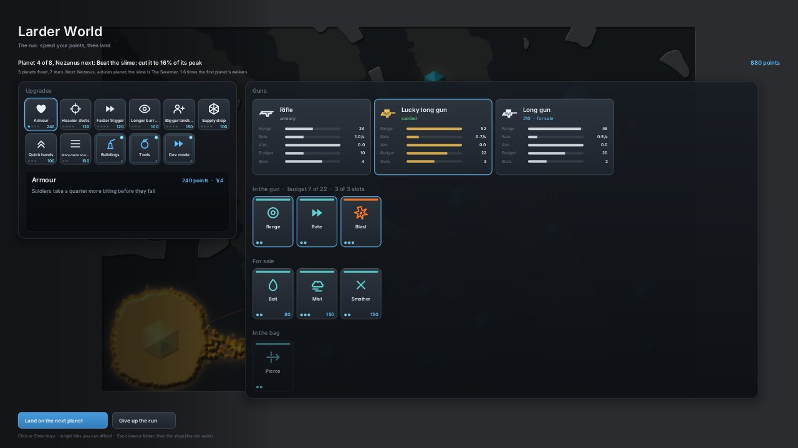<figcaption><h2>1280 x 720, dev mode</h2><p>The same run on a smaller window; dev mode adds a third folder (jump planets, points, redraw).</p></figcaption></figure>
  <h2 style="margin-top:12px">The first build</h2>
  <figure>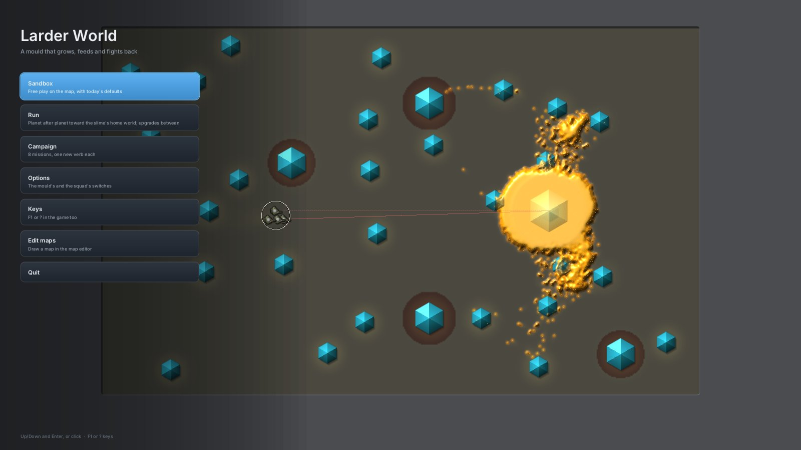<figcaption><h2>Start menu</h2><p>Run sits under Sandbox. While a run is under way it reads "Back to the run" and goes to the shop.</p></figcaption></figure>
  <figure>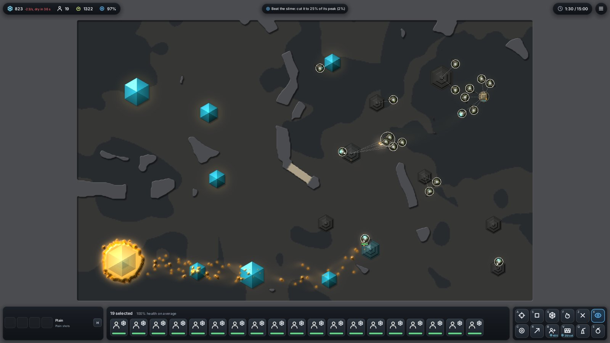<figcaption><h2>Planet 1 of 8, 1:30</h2><p>The level generator's first planet (a barrens world) against the Drifter. Goal: cut the slime to 25% of its peak. The farm hand at 1:30 has 19 soldiers and 4,823 food harvested, with the slime at 1,322 walkers. Turrets, lures and tools show locked on the card until the shop sells them; walls are owned from the start.</p></figcaption></figure>
  <figure>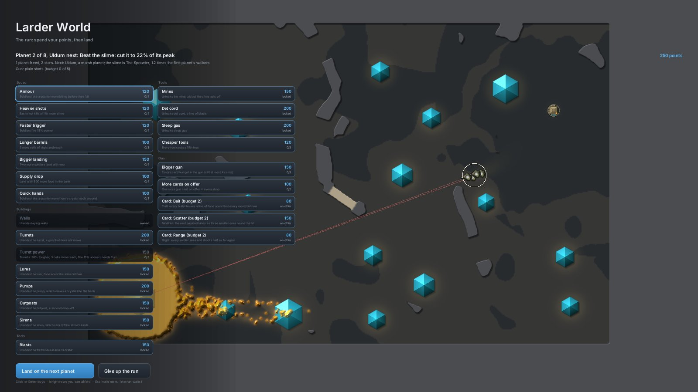<figcaption><h2>The shop after planet 1 (two stars, 250 points)</h2><p>Squad upgrades, building and tool unlocks, gun slots and three gun cards on offer. Bright rows are what the points buy now. The heading names the next generated planet and its biome; planet 2 brings the Sprawler with 1.2 times the walkers, goal 22%.</p></figcaption></figure>
  <figure>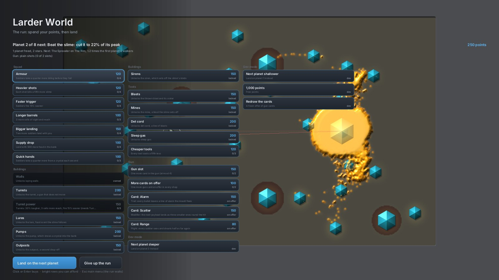<figcaption><h2>Dev mode</h2><p>Options, Dev mode (or <code>dev=1</code>) adds rows to jump a planet deeper or shallower, add 1,000 points and redraw the cards.</p></figcaption></figure>
</main>
